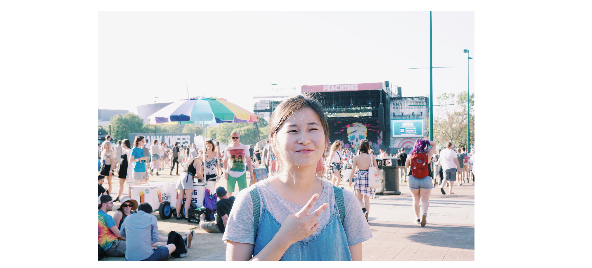

Hello! I'm Yaeeun Jeon, but I go by Esther. I'm currently a junior at the University of Pennsylvania majoring in Fine Arts with a concentration in graphic design and minoring in Computer Science. I believe in an intentional & explorative life and strive to apply that to design. I love working with programmers, designers, and anyone, really, to create design that evokes thinking and that 'Aha!' moment.
Some things I love in life –
Who's Got You Singing Again by Prep
Elixr's Guatemala Pour-Overs
Square One's London Fog
The Moon
The Ultimate Designer
Instagram -
@estheryjeon
Email -
estheryjeon@gmail.com
If interested -
resume
Note - This website was completely created by me with my limited, but growing (!) coding skills.